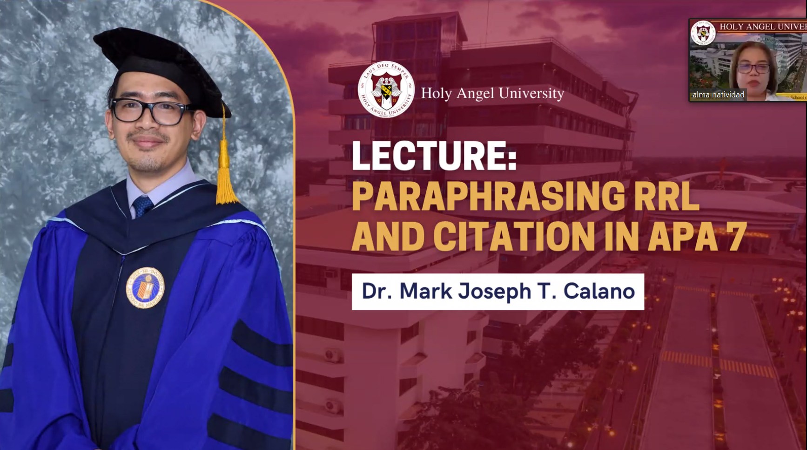
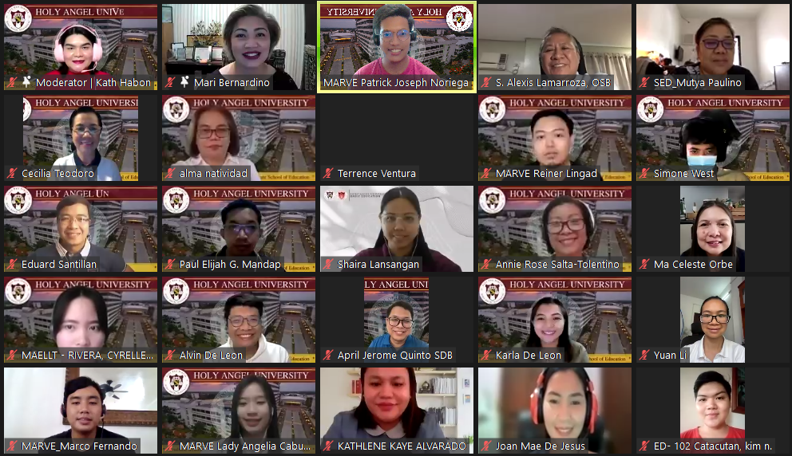

The School of Education (SEd) of Holy Angel University (HAU) hosted its 5th Research Colloquium via Zoom Meetings on August 6, 2022. The objective of the said colloquium was to share the most updated data of the studies that are relevant to the field of Education. The activity was attended by 112 participants from the undergraduate Teacher Education, Master’s, and Doctorate programs.
The colloquium commenced with a lecture by Dr. Mark Joseph T. Calano, one of the professors in the doctorate program. The lecture focused on Paraphrasing the Review of Related Literature and Citation in APA 7. After the lecture, 6 selected researches from the graduate and undergraduate programs were presented.
Among the researches presented were: “Comparative Study on the Use of E-Infographic Versus Traditional Method as to the Teaching of Health Optimizing Physical Education 2”, presented by Haynes Angelo Narciso, a graduate of Master in Physical Education and Sports; “Emotional Intelligence and Teacher Performance”, presented by Joan Mae De Jesus, a graduate of Master in Educational Management; “Evaluation of the Laboratory Manual of the Senior High School Department of a University in Pampanga vis-à-vis Green Chemistry: A Basis for Policy Recommendation”, by Shaira M. Lansangan, Master in Teaching Science; “Multi-theoretical Unraveling of African Trickster: Curriculum Alignment of Language and Literacy Domains in Grade 8 English”,by Angelie Salalac, Master of Arts in English Language and Literature Teaching; “Assessment of the Child-Friendly School System: An Input to CFSS Implementation” , by Kathlene Kaye C. Alvarado, Doctor of Philosophy in Educational Management; and “Lived Experiences of Edukasyon sa Pagpapakatao Teachers in Doing Gender-Mainstreaming”, presented by Jonard N. Balilu and Angel Ruselle M. Peria, graduates of Bachelor of Secondary Education major in Religious and Values Education.
Alma M. Natividad, Ph.D., Dean of School of Education and Cecilia Teodoro, Ed.D., Graduate Program Coordinator, graced the event and gave their opening and closing remarks, respectively. In her opening remarks, Dean Natividad proudly commended and extended her gratitude to the people behind the academic event. In the closing remarks, Dr. Teodoro reiterated the importance of ethical consideration and why we should always give credit and ask for permission from the researchers. Dr. Mutya Paulino, the program chairperson of the department attended the event as well.

Leave a comment